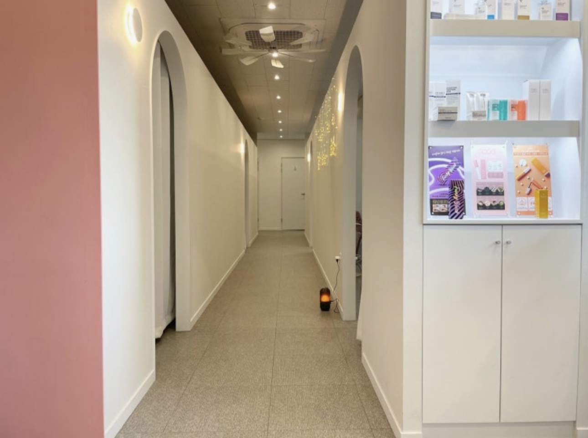

예약·문의
네이버로 방문 예약을 하거나, 카카오로 궁금한 점을 문의해 주세요.
얼굴에 어울리는 결, 나다운 자연스러움
장유림 원장 · 1인 예약제 · 개별 디자인 상담
15만 원 이벤트 상담받기 ↗적용 기법·기간·리터치 포함 여부는 예약 전 확인⌄AI BRAND FILM · 실제 시술 사례가 아닙니다.
SIGNATURE DESIGN
눈썹만 따로 보이기보다, 얼굴에 편안하게 어우러지도록.

평소 선호하는 눈썹 모양과 생활 습관을 듣고, 얼굴에 어울리는 디자인 방향을 함께 상담합니다.
WORRY
아침마다 눈썹 그리는 게 번거로워요.
양쪽 모양을 맞추기 어려워요.
어떤 눈썹이 어울릴지 모르겠어요.
너무 진해질까 봐 망설여져요.
예전 눈썹 잔흔이 신경 쓰여요.
이플은 고객님이 원했던 느낌을 듣고,
얼굴에 어울리는 자연스러움을 함께 찾습니다.
WHY EPLE
| 선택 기준 | 이플의 상담·디자인 방향 |
|---|---|
| 상담 | 선호하는 모양·생활 습관·고민을 함께 듣습니다. |
| 디자인 | 얼굴과 원하는 분위기에 맞는 방향을 상담합니다. |
| 결 표현 | 콤보눈썹은 머신으로 결을 표현하고 음영을 더합니다. |
| 기존 잔흔 | 현재 상태를 바탕으로 시술 가능 여부를 상담합니다. |
| 리터치 | 포함 여부·기간·횟수·추가 비용은 예약 전 확인합니다. |
이플이 제공한 운영 정보를 정리했습니다. 타 매장과의 우열을 의미하지 않습니다.
DESIGN RESULTS
사진을 옆으로 넘겨보고 눌러 확대할 수 있습니다. 개인별 결과는 다를 수 있습니다.
PROCESS
네이버로 방문 예약을 하거나, 카카오로 궁금한 점을 문의해 주세요.
평소 선호하는 눈썹 모양과 불편했던 부분을 이야기합니다.
기존 잔흔이 있다면 시술 가능 여부와 디자인 방향을 상담합니다.
얼굴에 어울리는 모양과 원하는 진하기를 함께 고려합니다.
자연눈썹·콤보눈썹·쉐도우눈썹을 1인 예약제로 진행합니다.
리터치 조건과 재방문 할인 적용 기준은 예약 전 확인해 주세요.
FAQ
기존 잔흔이 있는 경우 현재 상태를 바탕으로 시술 가능 여부와 디자인 방향을 상담합니다. 모든 잔흔의 커버를 보장하지 않으며, 상담에서 개별 안내드립니다.
평소 선호하는 눈썹 모양과 생활 습관, 그동안 고민했던 부분을 듣고 얼굴에 어울리는 디자인 방향을 함께 상담합니다.
통증에 대한 걱정도 상담에서 편하게 이야기해 주세요. 느끼는 정도에는 개인차가 있어 통증이 없다고 약속드리기보다는 개개인의 궁금한 점을 상담합니다.
원하는 느낌과 시술 직후 진하기에 대한 고민을 먼저 듣습니다. 깊고 진하게 색을 넣기 위해 무리하지 않고, 이후 남는 모습까지 고려하는 방향을 지향합니다.
기존 눈썹 상태와 원하는 분위기에 따라 디자인 방향을 상담합니다. 콤보눈썹은 머신으로 결을 표현하고 쉐도우 기법으로 음영을 더하는 방식으로 진행합니다.
눈썹 반영구는 기존 180,000원에서 이벤트가 150,000원으로 안내하고 있습니다. 적용 기법, 기간·인원, 리뷰 조건, 리터치 포함 여부는 예약 전 확인해 주세요. 6개월 이내 재방문 50% 할인은 기준 금액과 기간 산정 기준을 별도로 확인해 주세요.
REVIEW
“상담을 굉장히 꼼꼼하게 잘 해주셔서 마음에 들었고, 딱히 원하는 디자인이 없어서 자연스러운 스타일의 눈썹으로만 부탁드렸는데 제 얼굴과 어울리는 스타일 찾아서 눈썹 디자인 해주셨습니다!”
“눈썹 주변에서 다 잘됐대요 다른 지역까지 가서 여러번 해봤는데 지금까지 문신한중에 제일 맘에 들어요!”
매장 제공 후기 캡처에서 원문 발췌 · 개인의 경험이며 동일한 결과를 보장하지 않습니다.
네이버 플레이스에서 후기 더 보기 ↗WITH CARE

이플은 깊고 진하게 색을 넣기 위해 무리하게 시술하지 않는 방향을 지향합니다.
원하는 눈썹과 평소의 습관, 고민이었던 부분을 함께 듣고 시술 방향을 고려합니다.
RECOMMEND

RETOUCH & REVISIT
리터치 포함 여부, 가능한 기간과 횟수,
별도 비용은 상담에서 확인해 주세요.
할인 기준 금액과 6개월 시작일은 확인이 필요합니다.
리터치와 재방문 할인은 별도 항목입니다.
DIRECTOR
EPLE · DESIGNER
피부미용과 전공 · 반영구 4년차.
서산에서 1인 예약제로 이플을 운영합니다.
자연스럽고 얼굴에 어울리는 눈썹을 중요하게 생각합니다. 고객님이 원했던 눈썹과 그동안의 고민을 듣고, 디테일을 하나하나 살펴보는 디자인을 지향합니다.
PRICE
눈썹 반영구 이벤트
180,000원150,000원
리터치와 재방문 할인은 별도 항목입니다.
예약 전 적용 조건과 최종 결제 금액을 확인해 주세요.
NOTICE
LOCATION
